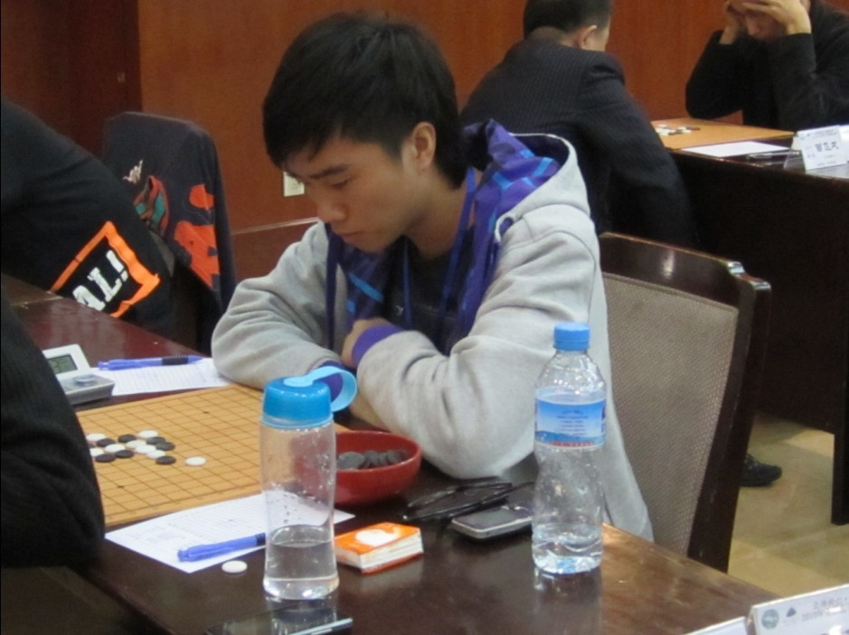
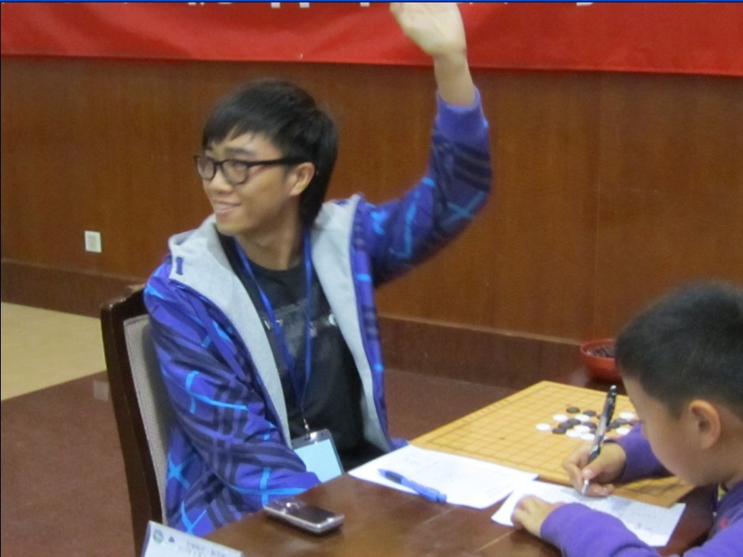

全锦赛小结
#1 全锦赛小结 作者：炫飞花 发表时间：2010-10-19 8:51:14
第一次参加现实比赛，心情一直都非常紧张。因为知道自己对有禁的开局十分不了解，而且还要背着炫飞家族的名号，压力就更加大了。
赛前一直找师傅(清缘)实战练习，哈哈。。下了很多局，居然多数都是和棋收场。在火车上，师傅又说自己有预感，我能拿前20，搞到我自信提升了很多。心想对清缘这么牛x的人都可以和棋，对其他人应该没问题的，我就抱着和棋的心态去比赛。
比赛第一天，第一个对手竟然是澳门仔。之前广州棋友聚会的时候，已经见识过他的厉害，心里好紧张好紧张。
我开了疏星
，
直到
16
都是网上常见的变化
。
想变一下
，
下了个十分弱的
17，
/*760*90，创建于2012-2-9*/ var cpro_id = 'u761865';
#2 Re:全锦赛小结 作者：大雪无痕 发表时间：2010-10-19 9:33:29
 加油
加油
#3 Re:全锦赛小结 作者：屏蔽 发表时间：2010-10-19 12:19:59
每个人都有连续输棋的时候。而在输棋之后恰恰是需要反思的时段，能否重新振作——这段最重要的内容却被一笔带过了。［ 掌棋宣传员 于 2010-10-19 12:48:27 时花20金币送鲜花一朵］
#4 Re:全锦赛小结 作者：怪 发表时间：2010-10-19 14:48:33
看来还是输的太少，才3盘就不行了，再玩几年输个几万盘应该就习惯了。#5 Re:全锦赛小结 作者：炫飞冰弦 发表时间：2010-10-19 15:10:10
附 焦比比赛照～


#6 Re:全锦赛小结 作者：唐门小虎 发表时间：2010-10-20 10:44:59
传说中的焦比大师，支持#7 Re:全锦赛小结 作者：冰雪笑醉 发表时间：2010-10-20 23:57:24
 加油！继续努力！！！！
加油！继续努力！！！！
#8 Re:全锦赛小结 作者：gerbo 发表时间：2010-10-23 18:31:27
焦皮~~~